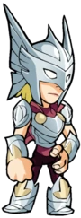
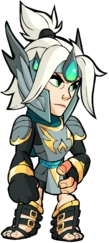
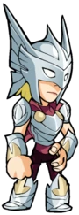
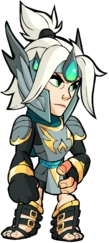

Seletor dos Mortos, Assassino dos Escolhidos
Herói da cidade natal de Asgard, esta meia Valquíria não consegue escapar de seu lado humano.


As crianças são raras entre os imortais de Asgard, e todo imortal com algum coração passou a amar a filha de Hypernia, a herdeira da beleza impossível de sua mãe imortal e do charme lendário de seu pai humano. Brynn cresceu em todos os cantos de Asgard. Ela fez dela sua escola e seu playground. Criada para ser uma Valquíria, ela ainda pode ferrar um cavalo de oito patas, tecer os fios do destino com as Norns e amaldiçoar uma faixa azul em Dwarvish. Como Valquíria, seu senso para a mente mortal a ajudou a identificar a grandeza nos lugares mais improváveis, não apenas em príncipes em campos de batalha, segurando suas espadas no alto. Três de suas escolhas mais chocantes venceram o Grande Torneio. Mas Asgard é uma vasta sociedade, e alguns não veem Brynn como uma verdadeira Asgardiana, enquanto seu sucesso gerou ciúmes e também admiração. Brynn foi atraída para o torneio pelo desejo de estudar esses mortais. Ela pertence a eles? Ela observou, aprendeu seus costumes e acabou amando sua bravura e coragem. Agora ela compete pelo puro prazer, sua sede humana pela luta surpreende a todos, inclusive a si mesma.
 


